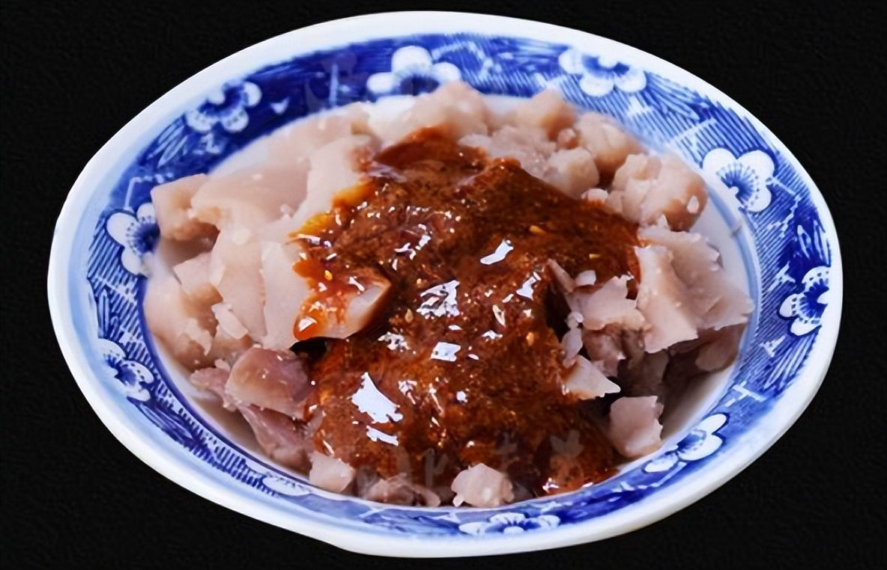
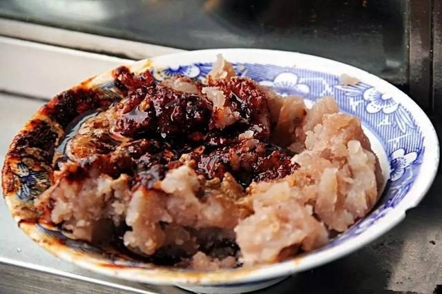
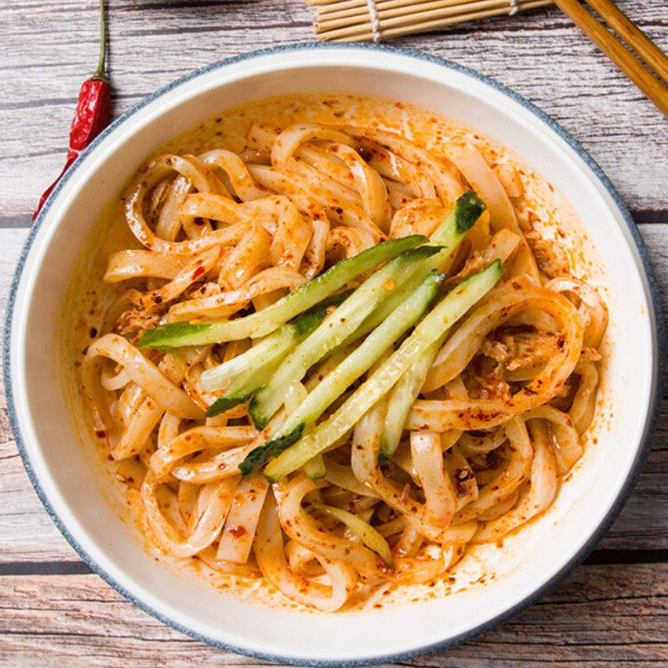
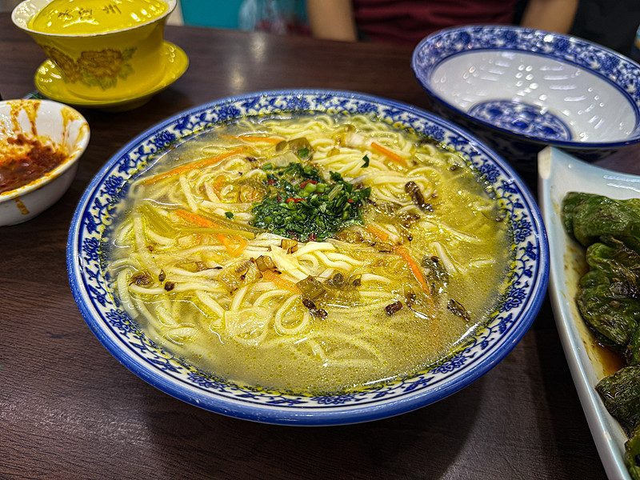
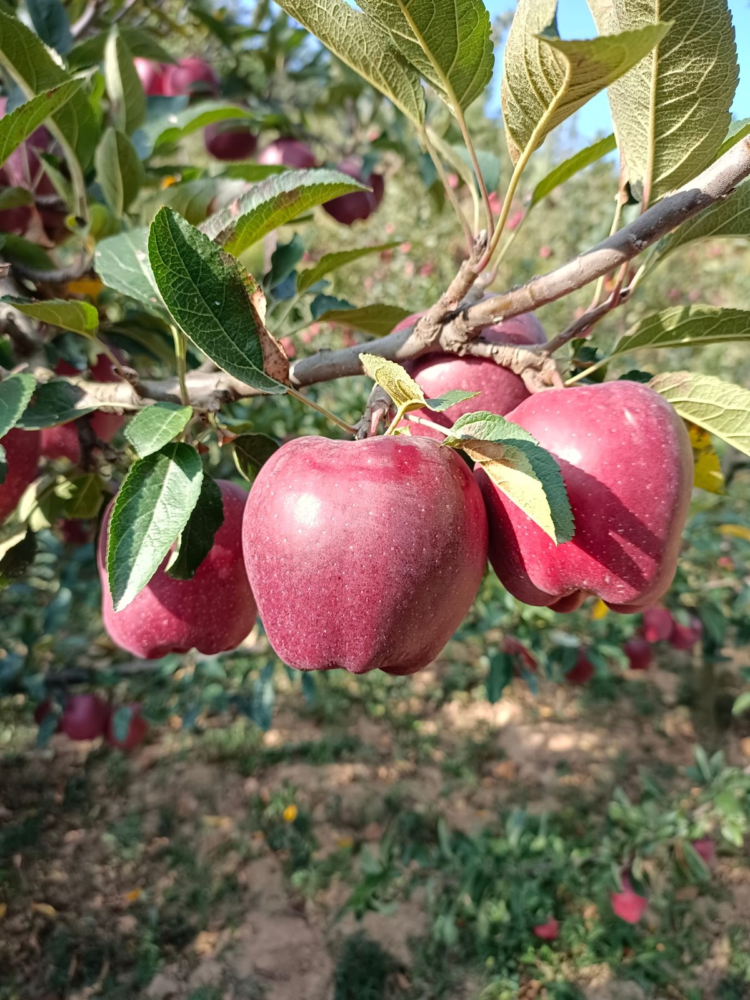

呱呱
辣 · 咸香用本地荞麦淀粉慢火搅成团，出锅后手揪成不规则的小块，浇盐、醋、蒜汁、芝麻酱和油泼辣子。相传它的来历能追到西汉，如今被叫作「秦州第一美食」，制作技艺也进了甘肃省级非物质文化遗产代表性项目名录。口感是绵中带一点韧，辣味上来得慢，走得也慢。
什么时候吃：早上七点到九点，配一碗热茶。
章肆 · 天水食味
天水的早晨不在面包房里。案板上一团黄褐色、颤巍巍的东西，老板娘戴着手套揪一块，浇辣油、泼蒜汁，人蹲在小板凳上呼噜呼噜吃完，这一天才正式开始。

天水的吃食有个特点：看着朴素，做法麻烦。呱呱要把荞麦糁泡、磨、滤、慢煮，再在锅里一勺一勺搅上几个钟头，搅到能立住筷子才成；面皮要洗面、沉淀、上笼蒸片，一层一层地揭；浆水则靠时间，把菜叶交给陶罐去发酵。所以本地人说「吃早饭」，说的其实是「吃手艺」。
这些东西都不贵，也都不上席面。它们出现在早市、巷口、学校门口的小推车上，用塑料袋一兜，蹲在路边就吃完了。写这一章的时候我想了很久怎么排序——最后还是按一天的时间来：早上呱呱和面皮，中午一碗浆水面，秋天再补一个花牛苹果。
四样吃食
点下面的标签，只看你想吃的那一味。

用本地荞麦淀粉慢火搅成团，出锅后手揪成不规则的小块，浇盐、醋、蒜汁、芝麻酱和油泼辣子。相传它的来历能追到西汉，如今被叫作「秦州第一美食」，制作技艺也进了甘肃省级非物质文化遗产代表性项目名录。口感是绵中带一点韧，辣味上来得慢，走得也慢。
什么时候吃：早上七点到九点，配一碗热茶。

面粉加水洗出面筋，淀粉水沉淀之后上笼蒸成薄片，晾凉切条，拌上黄瓜丝、面筋块、辣油和蒜汁。天水人常把它和呱呱摆在一个摊上卖，两样各来一半，叫「呱呱面皮」。夏天吃凉的，冬天把面皮在热水里过一下，叫「热面皮」。
什么时候吃：上午到中午，天热时最想来一碗。

浆水不是醋。芹菜、莲花白之类的菜叶焯过，放进陶罐里靠乳酸菌自然发酵几天，汤色微白，酸味清而不冲。吃的时候舀几勺浆水入锅，炝一点油，撒韭菜花，浇在手擀面上。伏天里吃一碗，胃口能立刻回来。
什么时候吃：夏天中午，热汤面放凉一点更舒服。

天水是花牛苹果的主产区之一，属元帅系品种，果形高桩、色泽浓红、果肉细脆。它的名字来自最早成片种植它的那个村子，本地人叫顺了口，就一直叫花牛。九十月下树，冷库里能存到第二年春天，但刚下树的那一个月最香。
什么时候吃：秋天，削皮切块，配一杯茶。
这个味型暂时没有记录。
一天怎么吃
不是菜谱，是一份本地人的时间表。
| 时间 | 常见吃食 | 一句说明 |
|---|---|---|
| 早上 7—9 点 | 呱呱、面皮 | 早市和小推车的主场，辣油与蒜汁的味道最盛。 |
| 中午 12 点 | 浆水面 | 夏天解暑，冬天也有人吃，酸汤配手擀面。 |
| 下午 | 面皮（热的） | 面皮过热水，加一勺辣油，适合天凉的时候。 |
| 秋天 | 花牛苹果 | 九十月下树，脆甜能放到春节。 |